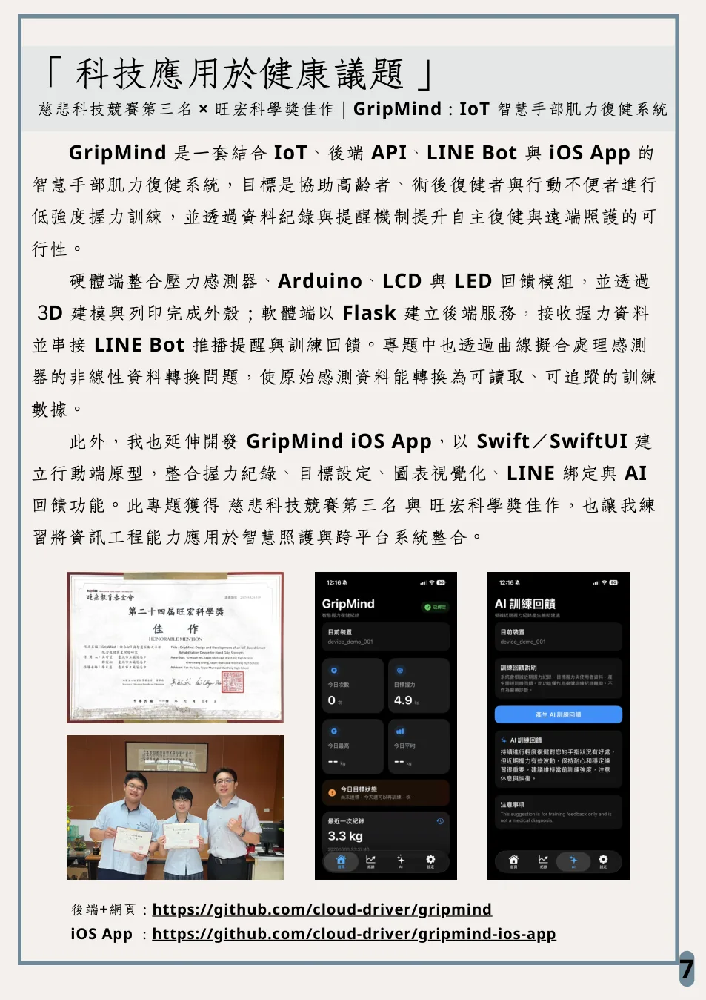
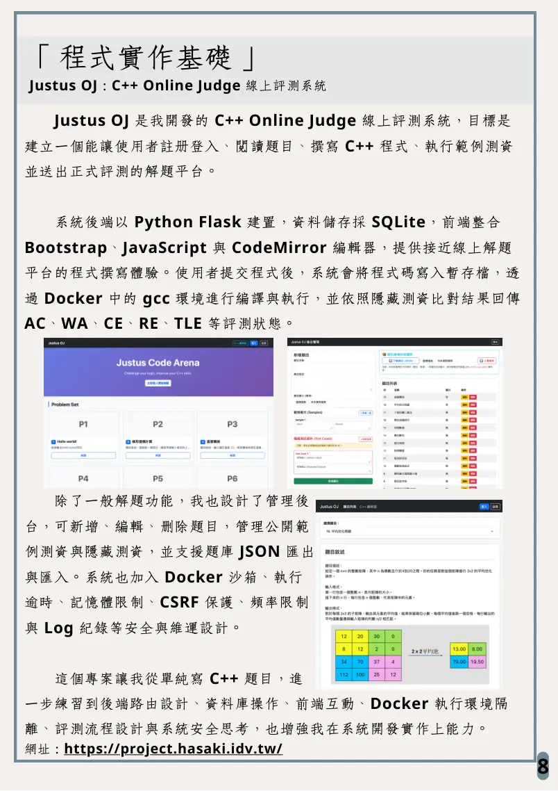
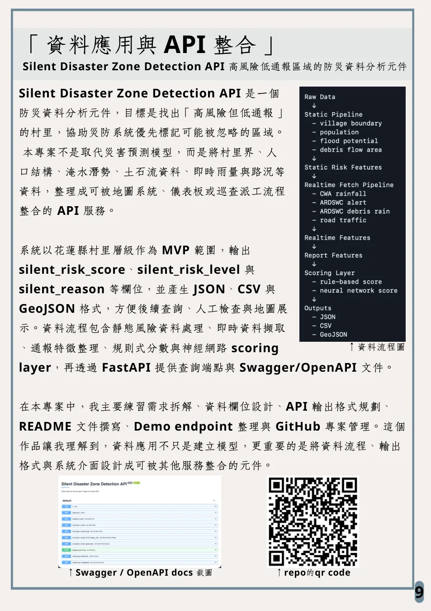
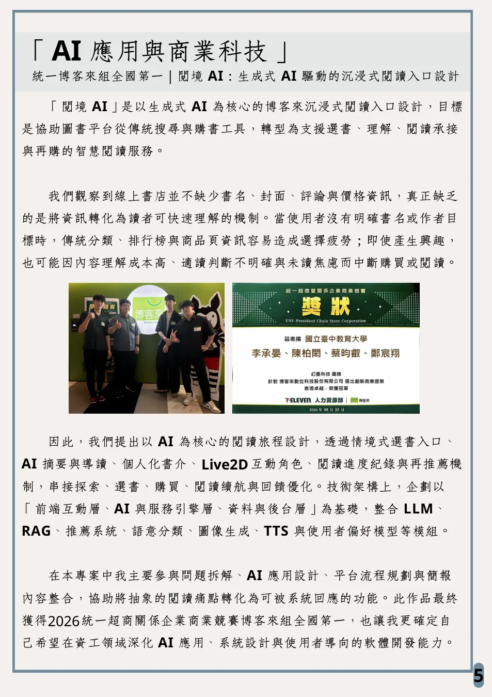
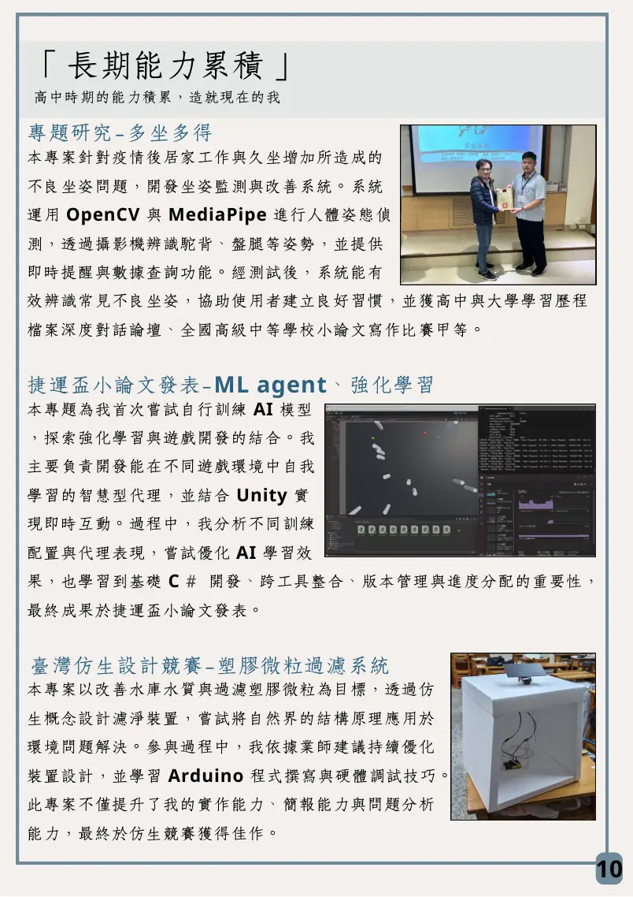
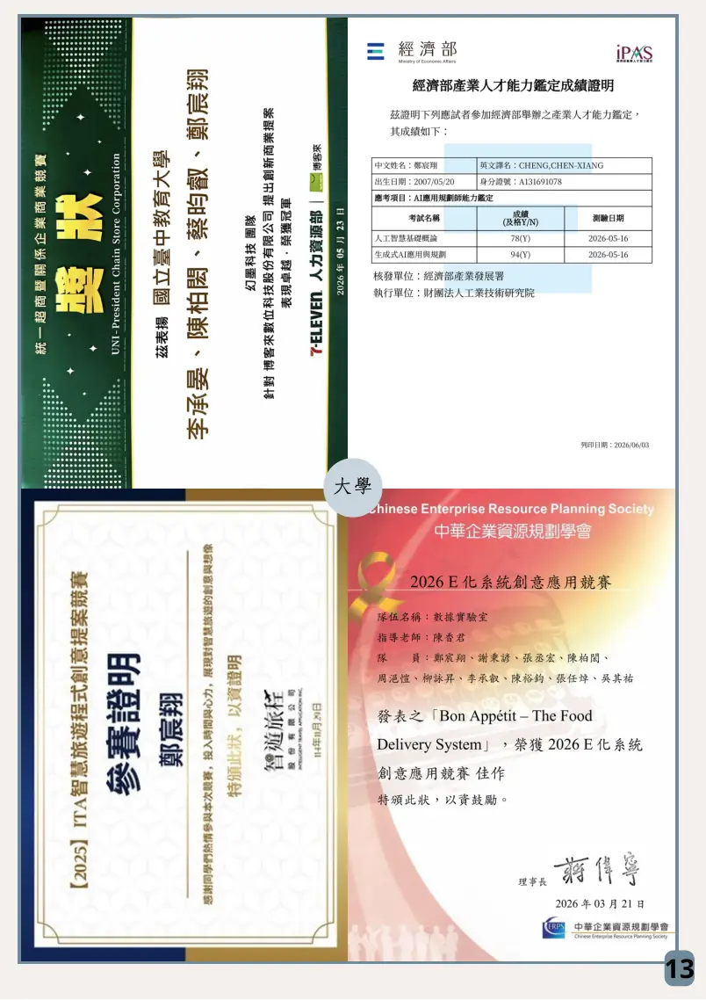

GripMind｜IoT 智慧手部肌力復健系統
健康科技結合壓力感測器、Arduino、Flask 後端、LINE Bot 與 SwiftUI iOS App，記錄握力訓練資料並提供提醒與 AI 回饋。
核心不是堆作品數量，而是呈現我如何把資訊能力放進真實問題。
我將學習重點聚焦在「以程式解決真實問題」，從商業科技、智慧外送、復健系統到防災 API，練習問題拆解、資料流程、系統架構與作品呈現。
我希望把既有的 AI 應用、API 系統與跨平台實作經驗，轉化為更紮實的軟體工程能力，補強資料結構、演算法、App 設計與系統底層能力。
以下五個面向對應到我的主要作品與長期累積。
LLM、RAG、推薦、語意分類、使用者情境與商業科技提案。
從需求拆解、功能模組、資料流程到 Demo 網頁呈現。
Flask、FastAPI、SQLite、Swagger、JSON / CSV / GeoJSON 輸出。
Arduino、感測器、LINE Bot、SwiftUI 行動端原型與資料視覺化。
班級代表、物理數學教學、資訊社社長、競賽隊長與成果整合。
依工程含量與申請相關性排序，保留最能說明能力的作品。

結合壓力感測器、Arduino、Flask 後端、LINE Bot 與 SwiftUI iOS App，記錄握力訓練資料並提供提醒與 AI 回饋。

以 Flask、SQLite、Bootstrap、CodeMirror 與 Docker 建立線上解題平台，支援註冊登入、題庫管理、程式提交與評測狀態回傳。




高中階段透過坐姿監測、強化學習、科技農業與仿生濾淨裝置累積資訊實作、簡報發表、團隊合作與跨域應用能力。
以「補強基礎、深化系統、累積可落地作品」作為主軸。
複習 C++ / Python、資料結構、演算法與 OOP，整理 GitHub、README、API 文件與作品說明。
扎實修習資料結構、演算法、資料庫、作業系統、軟體工程，參與專題與實作型課程。
延伸 AI 應用、防災資料、API Component 與系統規劃經驗，朝 AI 應用系統、資料應用或軟體工程發展。
連結集中放在此處，避免散在多頁造成閱讀負擔。
此頁為一頁式作品集，完整獎狀、證照、成績單與作品說明收錄於 PDF。
